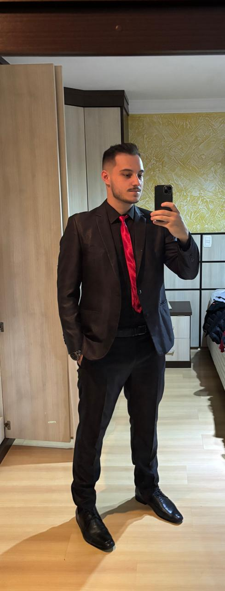

Tenho 21 anos, Estudo Ciências da Computação na ATITUS-PF, atualmente trabalho como assistente de ti na empresa Basso Pancotte. Gosto muito dessa parte de tecnologia e inovação.
Comecei na computação por realmente gostar da área, mesmo sem entender muito no início. Hoje, com a faculdade e os aprendizados que conquistei além dela, já adquiri uma boa base de conhecimento. Espero me aprofundar ainda mais, explorar novas tecnologias, desenvolver projetos práticos e crescer profissionalmente. Minha meta é continuar evoluindo constantemente, aprendendo não só o que a faculdade ensina, mas também o que o mercado e a prática exigem.
Movido pela curiosidade e pelo gosto por me conectar com as pessoas, busco o desenvolvimento contínuo em tudo o que faço. Tenho perfil adaptável, boa comunicação e motivação diária para evoluir, seja qual for o segmento.
Email: bavarescospadaarthur@gmail.com 📧
Telefone: (54) 9 8418-1729📱
GitHub: github.com/ArthurBava
linkedin: linkedin.com/arthur-bavaresco-spada